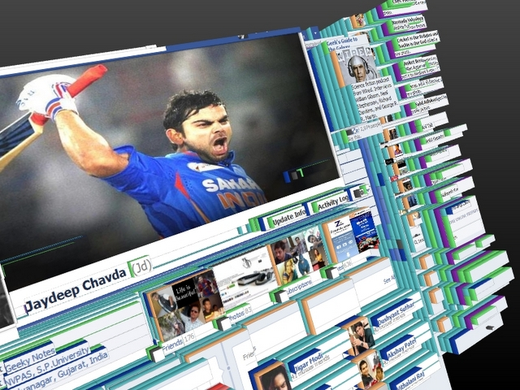

HTML and CSS run the Cinema
December the 19th in year 2014
I’ve had an interesting week thus far, and it’s only Friday. Weekend is still up for grabs, but I won’t go into that. I want to discuss my newly gained skills of web page development. Yes, you heard it right! I’ve made my own page! I know, you can’t believe it, right? Well, as a matter of fact you probably can, because you’re reading a blog on it. But whatever, I’m super excited!
There’s a lot of things one has to know about web page development, but it’s important to picture yourself the structure of it. So, what is it made of? Every web page is made from many different rectangles, all different sizes and sitting next to or on top of each other. For better understanding how this is, go back in time and try to remember a game that mostly every kid plays, that is “lets build a pile”. A game where one kid is lying on the floor, and all the other kids lie on top of him to build a pile. At the end you only see his head, because is the most important thing. The same is with elements of the web pages. You build a pile, put one on top of another, and just let out the part that is important for the page. The only difference is that web page elements don’t need to breathe, so they don’t complain, and you can leave them like that forever.
This ↑ is obviously the same as this ↓

Now that you understand how “let’s build a pile” works, let me tell you how “let’s sit next to each other works”. It’s like in the cinema. Everybody sits next to each other, and together they make the theater full. The same principle goes for the web page. You need a lot of elements to fill it up, and make it do things.
Next we need to know is how to tell the elements what they are saying. Typically they are saying some text, so we’ll stick to that. To do that, we need something called HyperText Markup Language. It usually goes by its initials - HTML. Here’s an example:
Pretty basic page but you can see the elements and that they are always between <something> and </something>. This “something” things are called tags. And what is between the tags is what the element is saying. In this case a dwarfish introduction. By the way, this are actually his real parents, because even in HTML world something has to come from something else. But even though that our elements can say things, they can only stay in one line. Like in a theatre. If HTMLs would go there, the first one to go in would sit in first row, chair one and won’t let anybody sit next to him, no matter what he is saying. Second one would sit in second row, chair one and so on, until only the far edge of the cinema would be filled to the last row. You can’t run a movie theatre like that. You need some rules.
Hello CSS or Cascading Style Sheets. He is the guy who tells everybody where to sit, what to dress, what they can eat, where they can play “let’s build a pile” so that the movie they are about to see is going to be really happy with all of them.
In more technical terms it gives HTML elements shape, colors, positions and so on. To build a proper web page you need both of this guys and they need to understand each other, so they can work together. If you want this to happen, you need to write the CSS code exactly right to the letter, or they won’t understand it. If even one letter is false, it would be just like you would be speaking Slovenian with them. And I can guarantee you that they don’t understand that. One of the most important features every HTML element has and is managed by CSS are it’s borders. Well one would think, “What’s so special about borders? It’s just a line that divides.” Well technically that is true, but who’s to say what kind of line is it going to be? Black? Blue? Dotted? Curved edges? Think of it as clothes a HTML element wears when going to the movies, and CSS says what the dress code is.
p is HTML and CSS tells him how to behave
We humans are really lucky because we are all very similar. When we go to the movies, every chair more or less suits us. We’re all pretty much the same size, same shape and everybody is pretty much one shade of brown. Except this one guy that I seen on youtube that is blue. But he is the exception that confirms the rule. HTML elements aren’t so lucky. They come in so many different sizes, shapes, colors that we humans don’t even come close, they go crazy with each one of this properties, so for them going to the movies is much much harder. One main difference in their theatre is that they can move their chairs. This allows CSS to move them around in every way it wants. There’s one cool property that CSS can give to the elements, and is very important when HTML elements are being sited. It’s their aura. Yes, I know! CSS has some serious power. By the way, he tends to call aura - a margin. I don’t know why. It’s not even half as cool as aura, but he’s the boss. Margins of elements can’t cross each other, so he has to put this into account when they are sited. Luckily he can adjust the margin, and they are sited the way he wants.
One last thing about we need to mention, before we’re done for today. When HTML elements go to the movies they usually wear T-shirts with something written on it. It’s they themselves who decide what it’s going to say. This is something that CSS with all it’s powers can’t affect. But CSS does have the power of controlling where on the T-shirt it’s going to be written. To adjust the text on the page to his wish he uses something called padding. He says how much space needs to be added from the edge of the T-shirt on the top, right, bottom or left to the text on it, and it is so placed exactly to the pixel, or px for short. Obviously CSS also decides what color, font type/family the text is going to be, in addition to what color the shirt is. But remember, it’s the HTML elements that decide what they’ll say. At the end of the day, they do live in a free country.